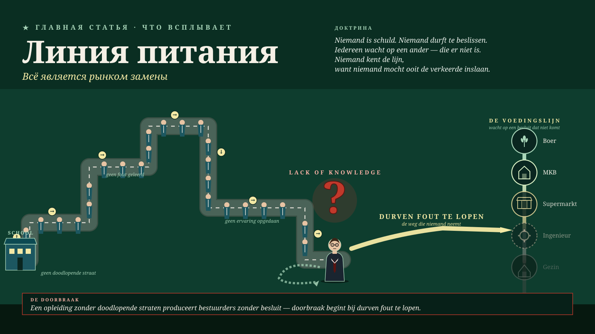

Мальта, июнь 2026 · Методология
Линия питания — всё является рынком замены
Смелости революционно сказать «это неправильно» не хватает из-за отсутствия самопознания — структурная ошибка, а не ошибка характера. Вся Европа замуровала свои обходные пути; нигде больше не может быть принято настоящего решения. Законы людей, живших до нас, не знают будущего — природа знает его, обладая тремя миллиардами лет опыта, и должна снова стоять на первом месте.
Читать статью полностью →